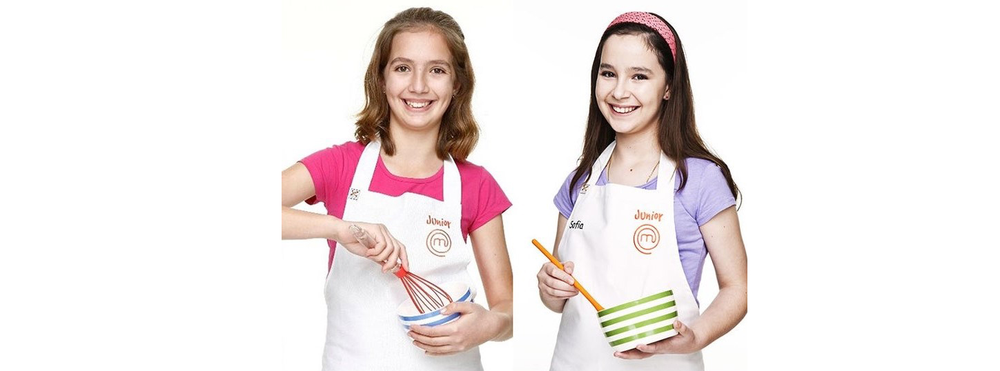

The Cheesecake Shop story began in Amman, Jordan in the 2019’s.
FARAH and TASNIM found a recipe in the local newspaper that would inspire them “Original” Cheesecake.
Everyone loved their recipe so much that they decided to open a small Cheesecake shop,
And because of Covid-19 they moved their baking equipment to a kitchen in their basement and continued to sup
ply cakes to several of the best restaurants in Jordan.